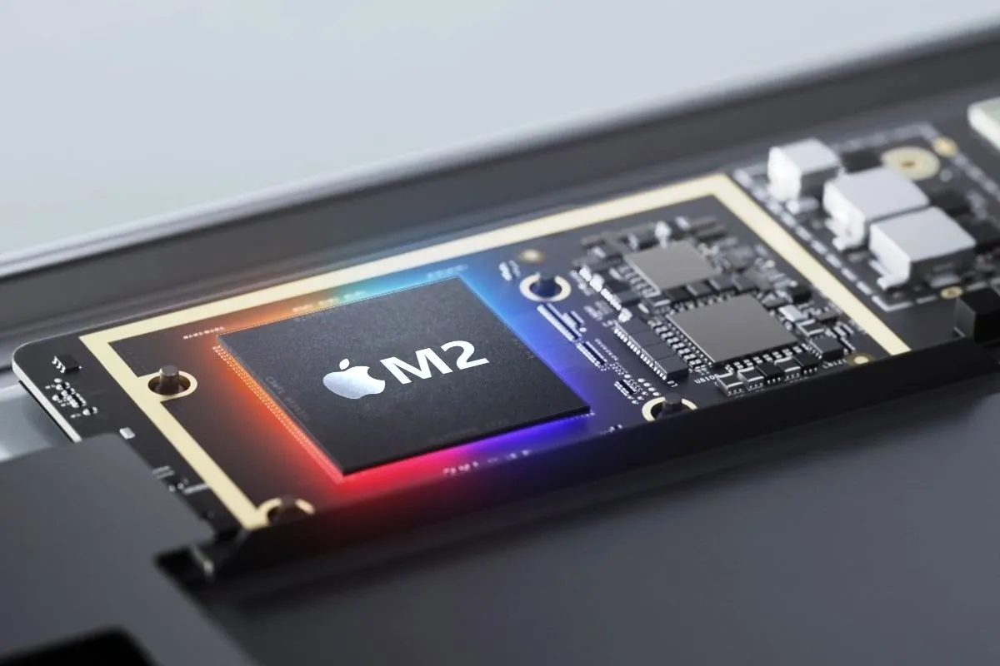

Processor, also known as a central processing unit (CPU), is the primary component of a computer or electronic device responsible for executing instructions and performing calculations. It is often referred to as the "brain" of the computer because it carries out the core operations that enable a device to function.
The primary function of a processor is to process data and instructions. It fetches, decodes, and executes instructions from memory, performs mathematical and logical operations, and controls other hardware components to execute programs and manage tasks.
Processors are a critical component in determining the overall performance and capabilities of a computer or electronic device, and understanding their basic features can help when selecting or evaluating hardware for your needs.
Now that you know some basic knowledge about processor, we can now do some comparison between Macbook Air and Lenovo LOQ processors.
Macbook Air M2

Comparison
Lenovo LOQ
Base
System Information
Single-core performance
Multi-core performance
SUMMARY FROM THE TABLE
The score for Macbook Air single-core is slightly better than Lenovo LOQ single-core score
The score for Lenovo LOQ multi-core is better than Macbook Air multi-core
Lenovo LOQ has a much better base frequency than Macbook Air
Lenovo LOQ has twice the size of memory than Macbook Air